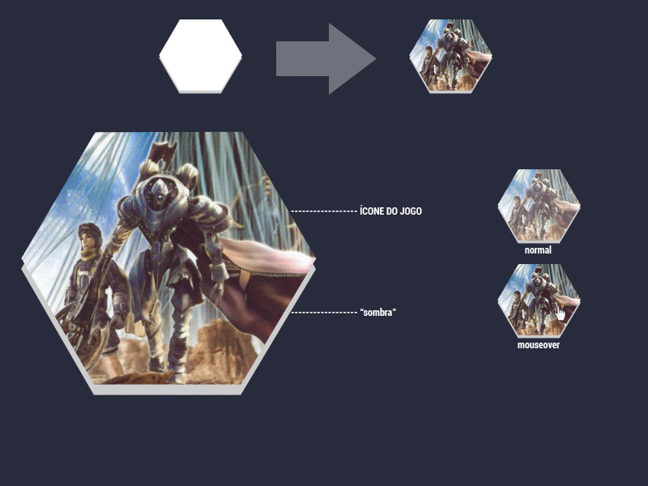
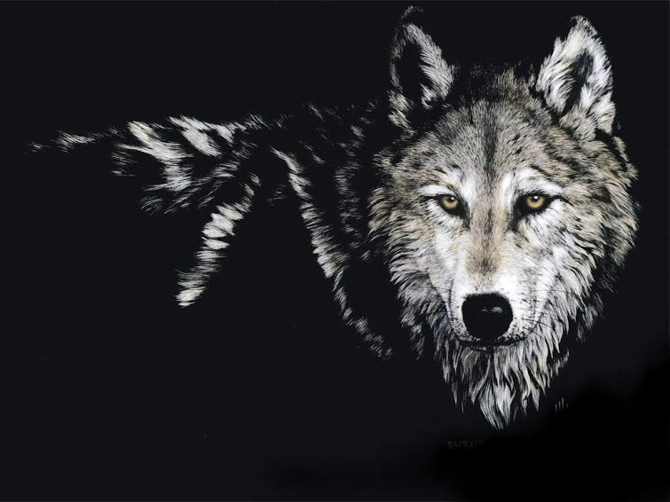
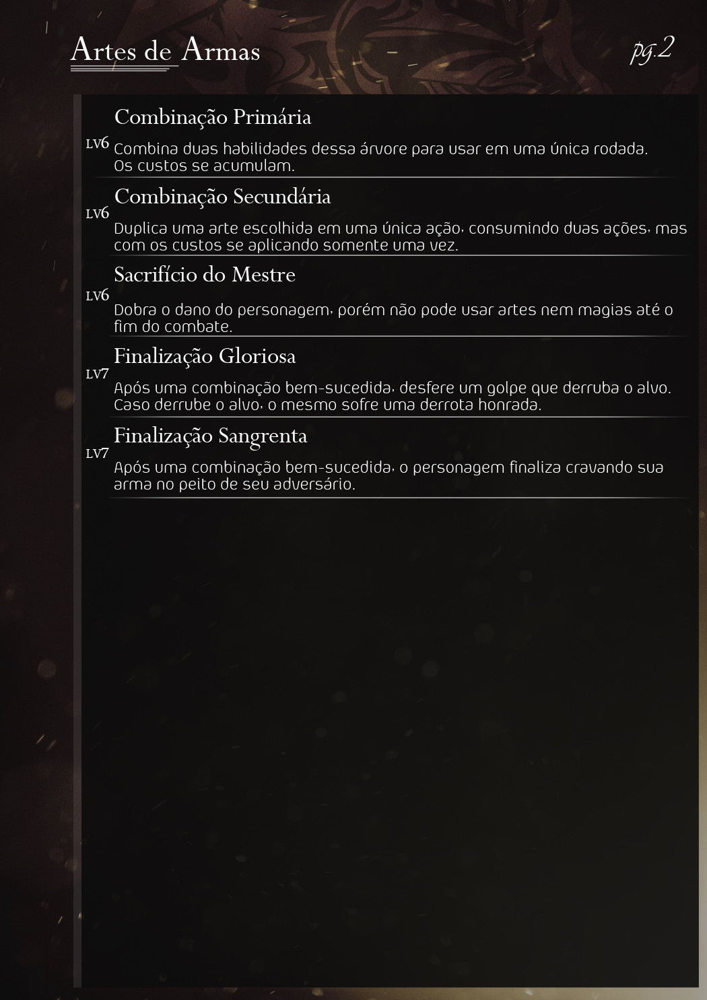

Douglas Lins
Douglas Lins

Comunicação Digital - Unisinos
Rio Grande do Sul - Brasil
Facebook: link
Twitter: douglaslins0
Instagram: douglaslins1
Behance: douglaslins
Rio Grande do Sul - Brasil
Twitter: douglaslins0
Instagram: douglaslins1
Behance: douglaslins

Design e layout de exibição de notícias em formato de feed RSS em tela cheia para ambiente desktop.
2012.
Experimentações com design de layouts para as interfaces do Gamehall.
2012.
Layout feito para um fórum de RPG com temática de Final Fantasy.
2013.
Interface de launcher de jogos desenvolvida com Rainmeter. O projeto escaneia uma pasta que contenha atalhos de jogos, gerando botãoes clicáveis para acesso rápido em disposição fullscreen.
2014.
Experimentações com design de imagens de capa para perfis do Facebook.
2015.
Layout feito para material descritivo de um RPG de mesa com temática de autoria própria.
2015.
"ego, ergo alter-ego"
Foto-manipulação com double exposure.
Gotham City e Dishonored.
2015.
Work in progress.
Work in progress.
O Newsfeed é uma interface para leitura de notícias em formato RSS feito com o uso do Rainmeter - uma ferramenta de customização para o Windows.
A ideia geral do Newsfeed é fornecer um conjunto de campos de informação no qual o usuário insere a URL dos serviços de RSS Feed cujas notícias gostaria de ler, precisando apenas clicar um botão em seu desktop para ter uma visualização em tela-cheia das notícias mais recentes dos canais que acompanha. A ideia geral é visualização macro e fácil alternação entre os serviços.
Estes launchers foram feitos quando o projeto Gamehall ainda estava em seus estados iniciais, e toda operação de customização era manual. Tendo em mente o uso de emuladores para os consoles Playstation 2, Nintendo GameCube e PSP, estes designs foram concebidos tendo como inspiração os jogos mais populares de cada plataforma, bem como suas apresentações em feiras e conferências.
Ao clicar o botão, com a interface projetada no ambiente desktop em formato fullscreen por meio do Rainmeter, o jogo seria carregado instantaneamente.
Conjunto de imagens que serviram para a construção do layout de um fórum de RPG com temática de Final Fantasy - mais precisamente dentro da narrativa de Ivalice, que compõe uma coletânea de jogos.
Todas as imagens produzidas tiveram como inspiração os trabalhos de Akihiko Yoshida, principal artista conceitual dos jogos de Ivalice.
Uma peça que ficou conhecida entre os usuários foi o convite para registro, que tem a função de ficar na borda do banner, sempre aparecendo para aqueles que visitam o fórum e não se registraram.
O background do fórum foi idealizado para assimilar um papel velho, pergaminho ou mapa, para remeter ao ambiente medieval de Ivalice. As artes foram utilizadas no plano de fundo para dar a ideia de que foram "queimadas" no pergaminho.
O plano de fundo é dividido em duas partes: esquerda-meio e direita. Assim, ele se reconfigura de acordo com o tamanho da tela, e sempre vai mostrar as bordas escurecidas e queimadas.
Exemplo do background auto-reduzido em resolução menor
Exemplo do layout completo
Exemplo de postagem
Exemplo da responsividade do background
O Gamehall é um launcher de jogos desenvolvido para o Rainmeter - uma ferramenta de customização do Desktop, para o Windows. Diferente da maioria dos projetos desenvolvidos para o Rainmeter, o Gamehall não exige que usuário tenha conhecimento de como alterar as configurações em arquivos INI.
Em vez disso, ele realiza por si só a configuração, escaneando uma pasta qualquer - à escolha do usuário -, gerando um launcher para cada atalho detectado.
O Gamehall então busca pela capa oficial do jogo na internet - com base no nome do atalho - para que possa servir de ícone pro launcher. Cada launcher, é claro, pode ser customizado em questão de clicks.



Vídeo demonstrando o funcionamento do projeto
BACKGROUND//
O background foi feito inteiramente com os brushes "Guild Wars 2 Brushes", da autoria de XtremeGimp (DeviantArt).
A ideia central era formar um plano de fundo composto por pinceladas fortes de tinta branca, preta e acizentada, com um lobo surgindo do meio, como se fosse formado pela tinta ou se tivesse mergulhado nela. Há todo um conceito também de assimilação da tinta com as sombras, mas essa representação acabou não ficando muito aparente.

ARTE DESCONHECIDA//
Fiz uso dessa imagem na minha arte, mas infelizmente não pude encontrar informações da autoria original da mesma, para que eu possa dar os créditos. Trabalhei os pêlos do lobo, tornando os da fronte mais nítidos, e esfumaceando os do fundo, para que ganhassem similaridade com o fundo composto por padrões de pincelada. Os olhos foram realçados e foi feito um leve recorte na parte direita, para que pudesse mesclar bem com a impressão de tinta branca.

ARTE FINAL//
Layout e design para o material de referência de um RPG de mesa de autoria própria, com sistema e temática autorais.
A ideia central da criação é fazer uso de texturas que lembram poeira e partícula de luz, para fazer menção sutil aos jogos de luta e RPG de videogame.
O uso de fonte serifada em conjunto com Aeroportal para a descrição foi justamente para passar uma noção de contraste - e também a mensagem de que há seriedade na diversão, e vice-versa. O jogador de RPG gosta de levar a sério o sistema e o que compõe seu personagem, então busquei me comunicar com esse aspecto do público.

Experimentações de double exposure (dupla exposição) com fotografia própria e imagens de lugares fictícios. A escolhida no fim foi Gotham City, pois as luzes da cidade em dupla exposição produziram um efeito similar ao visto no trailer do filme Batman vs Superman, onde o homem-morcego diz "Do you bleed? You will", que acabou sendo usada como citação de legenda do trabalho.
Trabalho de colorização final
Outras ideias descartadas